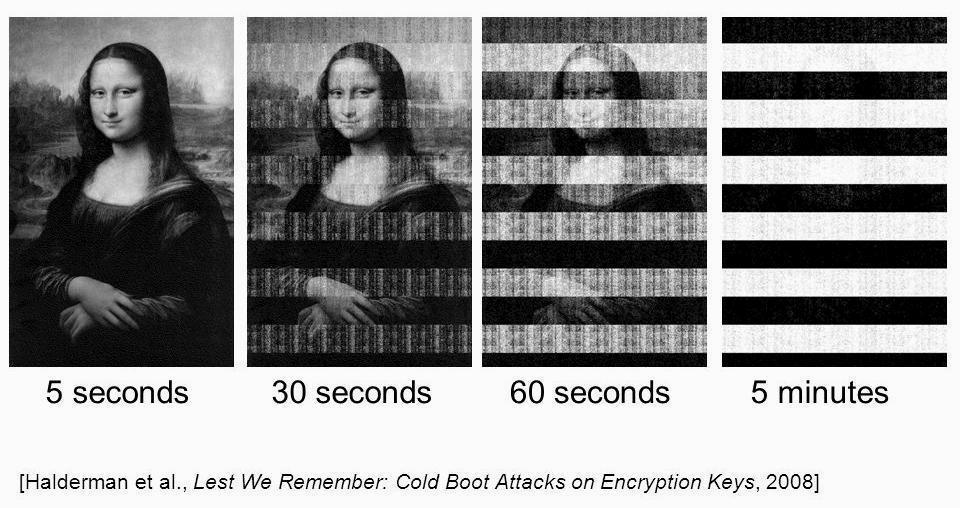

Intro
In this article I will demonstrate how to bypass BitLocker encryption on Windows 11 (version 24H2). This was accomplished by extracting full volume encryption keys (FVEK) from memory using my tool Memory-Dump-UEFI.
Background
If an attacker has physical access to the device, they can potentially get access by apruptly restarting the computer and dumping RAM from recently running instances of Windows. The captured memory can be analyzed to locate sensitive information like FVEK keys. This technique is not foolproof as the contents of RAM will rapidly degrade when power is cut off.

There are several techniques to mitigate this memory degradation, including cooling the RAM physically or using external power sources to maintain power delivery. In the case of this demo, I shorted the reset pins on the device’s motherboard, which causes the system to abruptly restart without losing power.
Another potential issue is secure boot, which is a security standard that restricts what is allowed to run when a device starts up. This protection has its own limitations, and has been bypassed using shims or a variety of other means that are outside the scope of this demo.
Step 1: Create a Bootable USB Device
For this step you must obtain a USB storage device that is larger than however much RAM is on
the target system. I have included a script called flashimage.sh to simplify this step.
Follow the steps detailed here to create and use the bootable application.
Step 2: Abruptly Restart the Target System
This can be done in a variety of ways but the goal is to minimize how much time the computer is completely powered off. In my experience I have had the most success restarting the system while Windows is loading but before the login screen has appeared, at least in the case of finding FVEK keys.
Step 3: Boot from the USB Device
Immediately boot to Memory-Dump-UEFI from the USB device. You will arrive at the UEFI shell, where you can locate
and execute app.efi. There are more details on how to do this in the README
for the application. The amount of time it will take depends on the amount of RAM being dumped and the speed of
the USB device. I recommend leaving any other USB storage devices unplugged during this step to avoid the
program accidentally writing to the wrong drive.

Above is an example of what it should look like when you make it to the shell. The memory dump will start generating dump files until it runs out of memory. After its completed, feel free to shut the computer off like normal.
Step 4: Analyzing the Dumps
Setup
There will probably be several dumps produced by the application. This is due to the 4GB limit on file size
imposed by the FAT32 filesystem. The filesystem has to be FAT32 meet UEFI specification. For
convenience purposes I have included a script in the tools directory called concatDumps.py
that can combine several dumps into one in chronological order. The content of the dump will consist
of whatever raw data was inside memory at the time, so I recommend a tool like xxd to read it more easily.
To help with searching the dumps I included a script called searchMem.py that allows you to search for a
hex pattern within the dump. It will find the offset of instances of that hex pattern, which you can then jump
to by using xxd -s <offset> <dump>.
Pool Tags
Pool tags are 4 character long identifiers that indicate where Windows kernel memory pools are. These pools
are allocated by the Windows kernel and are great places to look for sensitive information. There are a large
number of these pool tags, and I included a text file called pooltag.txt which contains a list
of the pool tags with details about their respective purposes.
Before continuing I’d like to give Microsoft a round of applause for being kind enough to plainly mark where
cryptographic keys show up in memory.
Back on Windows 7, key recovery was as simple as locating the FVEc pool tag, which corresponds to cryptographic
allocations under fvevol.sys. On Windows 8.1 and 10 the key could be found in the memory pool tagged by
Cngb which corresponds to the ksecdd.sys module. Throughout my study of the Windows 11 memory dump, I couldn’t
locate the key in either of those places, but I did find it in two other locations.
FVEK Key Recovery
The first place I located the FVEK key was under the dFVE pool tag, which indicates memory allocated by
dumpfve.sys, which pertains to the full volume encryption crash dump filter for bitlocker drive encryption.
The pool tag is underlined in blue while the FVEK key is highlighted in red. This was the easiest and most
consistent location I found the key, and it is also prefaced by 0x0480 which indicates the type of encryption
being used, which in my case is XTS-AES-128.
The second location is under the None tag, which pertains to calls to the ExAllocatePool routine. This time
the first half of the key can be seen two times and the second half once.
Next Steps
It’s important to note that you need to preface whatever key you obtain with what algorithm is being used. That means if your key is:
b2cbc06071931b7cc50b59f8789571f4dd815c2008e93c02d5c6cd98c83ef54b
You need to add 0x8004 (or whatever the algorithm used was) to the beginning of the key in little endian format
like this:
0480b2cbc06071931b7cc50b59f8789571f4dd815c2008e93c02d5c6cd98c83ef54b
Next, you need to take that hex and dump it into a file, which can be done like:
echo "0480b2cbc06071931b7cc50b59f8789571f4dd815c2008e93c02d5c6cd98c83ef54b" | xxd -r -p > output.fvek
I highly recommend using the dislocker suite of tools to figure out which algorithm/value you
need and to ultimately unlock the drive. If you did everything correctly you can use output.fvek to unlock
the bitlocker protected partition and access any data on the volume.
Final Notes
The best possible way to understand how Microsoft implemented bitlocker is to do kernel level debugging using
windbg. This can be done fairly easily using virtual machines or a crossed over USB 3.0 A/A cable. The reason I was
able to find the key in the first place is by stepping through the Windows boot process and watching bitlocker
in action. Microsoft makes an effort to destroy keys using functions like SymCryptSessionDestroy but they
fail to destroy every key, as evident by its presence on the heap.
References
https://tribalchicken.net/recovering-bitlocker-keys-on-windows-8-1-and-10/
https://github.com/Aorimn/dislocker
https://github.com/microsoft/SymCrypt
https://github.com/libyal/libbde
https://github.com/zodiacon/PoolMonX/blob/master/res/pooltag.txt
https://techcommunity.microsoft.com/blog/askperf/an-introduction-to-pool-tags/372983